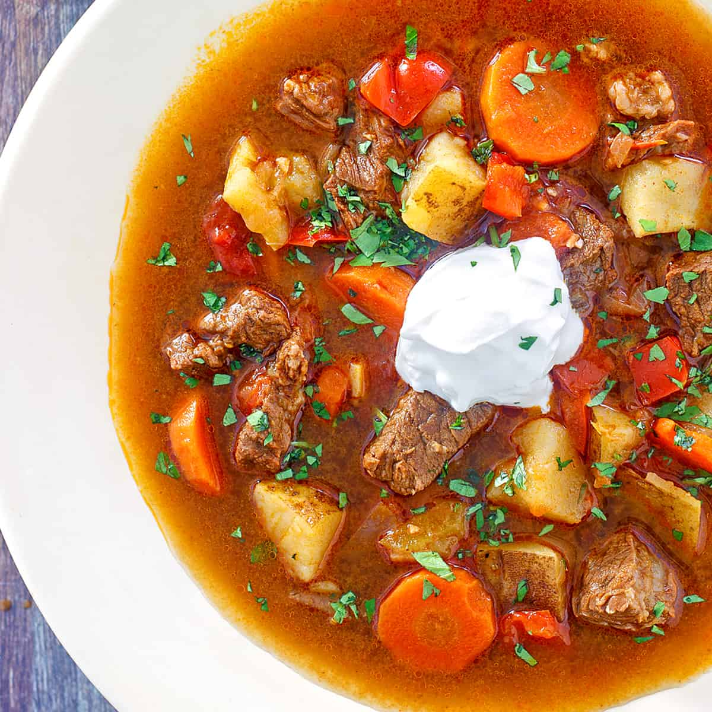

How to cook Hungarian Goulash
What is Hungarian Goulash?

Traditional Hungarian goulash is a prime example of how a few simple ingredients, cooked properly, can yield an incredible flavor. Though many variations of Hungarian goulash exist, and every cook makes it just a bit differently, this is an authentic recipe from the heart of Hungary.
Hungary holds a special place in my heart and in my family's hearts. My brother lived there for a couple of years and would always describe its beautiful scenery and architecture and his love for the Hungarian people. When I visited Budapest for the first time I immediately fell in love with it. Its name comes from the two sides of the city (Buda and Pest) separated by the Danube River running through it. With its striking chain bridge, stunning parliament building, and its incredible Buda Castle, Budapest is a breathtaking city.
Hungarian Goulash Ingredients
- Pork lard
- Onions and garlic
- Hungarian sweet paprika
- Stewing beef
- Yellow and red peppers
- Tomatoes, potatoes and carrots
- Some broth
- Salt
Hungarian Goulash Recipe: Steps
Then let's get started!
- Melt the lard or butter/oil in a Dutch oven or other heavy soup pot over medium high heat and cook the onions until beginning to brown, about 7-10 minutes. Add the beef and cook until the beef is just starting to brown, 7-10 minutes.
- Add the bell peppers, tomatoes, and garlic and cook for another 6-8 minutes. (Note about peppers: Outside of Hungary it's very difficult to find the peppers they use there. The best ones to use in their place are red and some yellow/orange. Avoid regular green bell peppers as they have a starkly different flavor profile.)
- Remove the pot from the heat and stir in the paprika, salt, pepper and caraway (if using) (note: paprika becomes bitter if at all scorched).
- Add the beef broth, bay leaf, return to the stove and bring to a boil. Reduce the heat to medium, cover and simmer for 40 minutes. Add the carrots and potatoes. Return to a boil, reduce the heat to medium, cover, and simmer for another 30-40 minutes or until the beef is nice and tender. Add salt to taste. Remove the bay leaf.
Serve with some crusty bread and, if desired, a dollop of sour cream.
Enjoy!